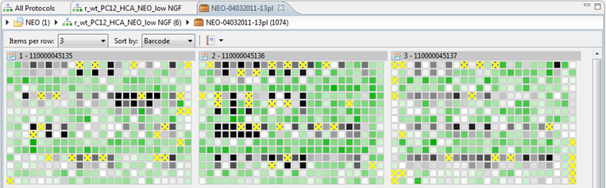

You can find more information about heatmaps in the Well Browser.
Normally, a heatmap is showing 1 feature for 1 plate. Because this editor is displaying a list of plates, the heatmap thumbnails represent the same list of plates and displays one feature, the active feature as chosen in the feature selector.